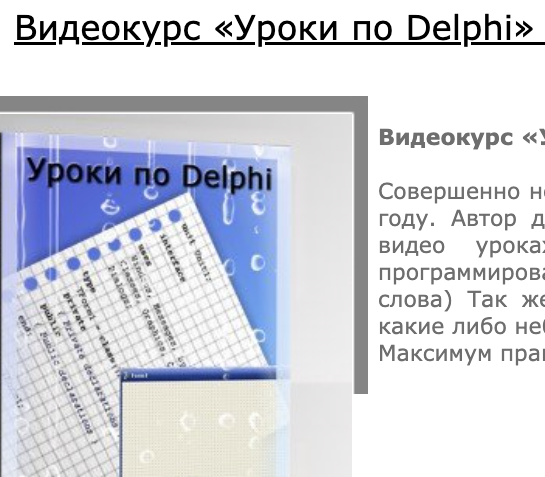

Меня зовут Юрий Корниенко, будем знакомы =) Я - программный инженер.
Долгое время занимался frontend разработкой Dart/JS/TS и чуть меньше мобильной кроссплатформенной разработкой на Flutter, на некоторых проектах писал на Python, Go, Node.js.
Сейчас фокусируюсь на backend разработке, инфраструктуре и системном программировании.
Мои основные инструменты:
- C
- Go
- Rust
- Python
- Dart/Flutter
- JS/TS/Node.JS
В ранние школьные годы увлекся программированием на Лого Мирах, Turbo Pascal, Delphi и затем втянулся в спортивное программирование, им продолжал заниматься до окончания универа.
В школьное время было и такое: эксперементировал и делал уроки по Delphi, оказывается интернет еще помнит об этом, даже обложечка, которую делал в Photoshop осталась :D 
Шли годы и я познакомился с C, C++, PHP, JavaScript, Python, начал учиться версать на HTML/CSS.
Малость подрабатывал на написании кода на C для студентов и пописать PHP скрипты на заказ.
Больше 10 лет назад открыл для себя Linux,
а сейчас пользуюсь Mac/Linux, - any way
это Unix way
.
Поступил в ОГУ имени И.С. Тургенева на программную инженерию, но прекрасно понимал что нет пути лучше чем учиться всему самому в свободное время. Ищу информацию, читаю статьи и прохожу курсы, кстати вот мой профиль на Stepik и Coursera.
За время учебы я делал домашние проекты, многие можно увидеть на моем Github, к примеру:
- Небольшой графический редактор для 16 битных систем на C и Assembler
- Учился и пробовал верстать сайты (первый, второй)
- Не ищу простых путей и на одну из летних практик взял задачу создать Аудио плеер на Web технологиях: нарисовал дизайн, скрепил Vue + Electron
Далее я началинал свой карьерный путь разработчика, и выделил для себя некоторые очень важные качества в работе:
- Agile
Work and Life balance
- Отлаженный процесс разработки
- Быть в коллективе сильных инженеров, ибо на пути к профессиональной разработке нужно работать с мастерами своего дела чтобы учиться большему
Занимался работой в сообществе разработчиков GDG в Воронеже: пробовал выступать и читал доклад по Dart для студентов с практической частью и помогал в организации GDG Voronezh Devfest 2019.
У меня большой кругозор по технологиям и языкам, изучаю разное и погружаюсь в зависимости от задач и интересов.